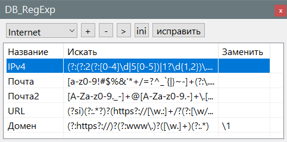

DB_RegExp
Плагин предназначен для хранения регулярных выражений и удобного использования.

Интерфейс
Плагин имеет один пункт меню "Плагины -> DB_RegExp -> DB_RegExp", для вызова окна.
Использование
Обязательное: Перед использованием создайте DB_RegExp_Lang.ini и в 13 строке замените слово "Замена" на название вкладки в диалоге "поиск и замена" это зависит от языка перевода (ru, en и т.д.) выбранного в настройках и плагин будет искать это окно по названию. Естественно если имя не совпадает, то окно не будет найдено и плагин не сможет работать, ни вставлять, ни захватывать тексты из окна (теоретически это можно сделать автоматически получив язык перевода из config.xml открыв его найти перевод по идентификатору, в будущем возможно так и будет).
Плаг имеет раскрывающийся список для выбора раздела регулярных выражений. Кнопки:
"+" захватывает регулярное выражение в окне поиска и замены и добавляет его в базу.
"-" удаляет выбранное регулярное выражение
">" обновить регулярное выражение, то есть перечитать из окна поиска и замены, но иногда лучше добавить, а потом удалить ненужное.
"ini" - открывает конфиг с регулярными выражениями
"исправить" - помогает исправить ini. Например не удобно указывать номера параметров в ini, но не беда, пишем с любыми и даже одинаковыми ключами, далее жмём исправить и получаем список по порядку.
Русификатор
Плаг поддерживает мультиязычность, для этого нужно скопировать DB_RegExp_Lang.ini в папку Config. При наличии файла doLocalConf.xml файл DB_RegExp_Lang.ini должен находится в папке "Notepad++\plugins\Config", иначе в C:\Users\User\AppData\Roaming\Notepad++\plugins\config.